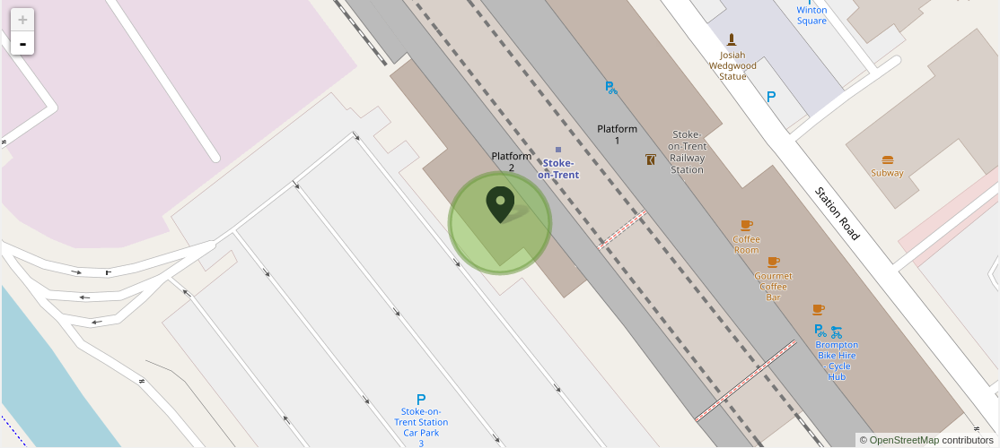

Lo que relata Borges, es el preludio a la batalla de Albert, que es la primera parte de la batalla de Somme esta batalla dejó un cratér que es el conocido **Lochnagar mine", inclusive actualmente todavía esta conservado y es accesible a público en general. Este cráter es un memento de esa batalla pero en aquel momento era una mina que los ingleses prepararon para los alemanes.

La línea se construyó para servir a los jardines de Trentham, que el cuarto duque de Sutherland había donado recientemente al distrito del condado de Stoke-on-Trent. Durante la guerra, la Cámara de Compensación Central del Banco de Inglaterra fue evacuada de Londres a Trentham Hall y los trenes de mercancías regulares corrieron a Trentham Park para entregar suministros y los trenes de excursión continuaron durante la guerra.
La estación de tren Stock on Trent


La novela narra los desvelos amorosos de dos personajes excéntricos y apasionados. Aunque “Sueño en el Pabellón Rojo” es, en esencia, una historia de amor escrita, según afirma su autor “con palabras falsas y en lengua vulgar”, en realidad es mucho más que eso: es una crítica feroz a las contradicciones y miserias de una nobleza decadente que gobernaba la China de aquella época, y un manifiesto contra la codicia descontrolada y la falta de escrúpulos.
Se dice que esta basado en el Biddulph Grange Garden ya que este tiene dentro de el varios jardines de distintos tiempos reflejando así el concepto de tiempo, además de que habla también de que Borges tal cual no conocía de primera mano este jardin sino que se dice que lo escucho de sus antepasados, el jardín que se anexa abajo tiene un estilo asiatico parecido al que se describe en la historia.

Dejando de lado la astronomía, caligrafía, ajedrez, etc. Ts'ui Pên dedico 13 años
en la creación de un libro y un laberinto, nunca diciendo que ambos eran uno solo
y que hacían referencia a como el tiempo se bifurcaba como
las ramas de un arbol creando "historias alternas", así siendo un laberinto de interminables
historias que sucedían en paralelo.

En orden de izquierda a derecha son el espia aleman de raíces chinas Yu Tsun, el sinólogo Stephen Albert,
El bisabuelo de Yu Tsun y creador del Jardin Ts'ui Pên, el capitán Richard Madden y el jefé de Yu Tsun
cuyo nombre y apariencia son desconocidos.


El hecho de crear un reto, como mencionan en la lectura, Ts'ui Pên creo la historia para que fuera una adivinanza, y pues en el diseño de juegos de igual manera el creador tiene que presentar un desafio o un reto que no necesariamente tiene que ser una adivinanza y esto no quiere decir que las historias no tengan relevancia, la tienen porque plantan un contexto, permiten comunicar al autor ya sea del juego o a Ts'ui Pên de forma indirecta su ser. Pero no solo Ts'ui Pên sino también Borges puede comunicar o transmitir algo a través de esta lectura, puede intentar tergiversar la realidad o jugar a través de la noción del tiempo y el paralelismo que puede existir por lo menos a nivel hipótetico.
Galindo Arroyo Fernando Iván 150300107